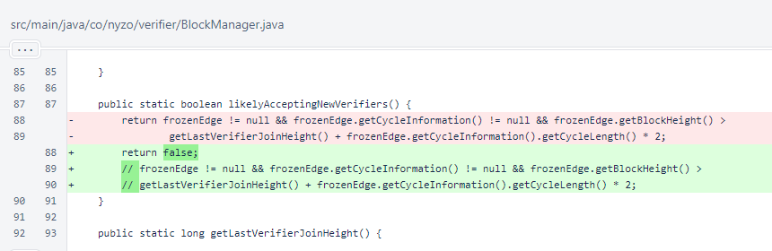
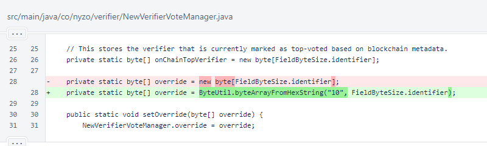

Nyzo version 592 (commit on GitHub) hard codes overrides to temporarily close the cycle to new entries. This is entirely optional.
This version affects the verifier.
Cycle stalls are stressful and time-consuming for operators of verifiers. Our debugging of recent cycle stalls has revealed two problems, both of which have been fixed. However, the stalls continue to occur. We want to give the cycle a break from manually fixing cycle stalls, and we want some time to implement a thoughtful solution to the problem.
In BlockManager, the likelyAcceptingNewVerifiers() method is been hard-coded to always return false. This prevents the artificial delays every 25 blocks that were introduced to give new verifiers extra time to join.
The override field in NewVerifierVoteManager is now initialized to 1000000000000000-0000000000000000-0000000000000000-0000000000000000. This is an obviously invalid identifier. If enough verifiers vote for this identifier, the 50% threshold required to admit a new verifier will not be achieved.
